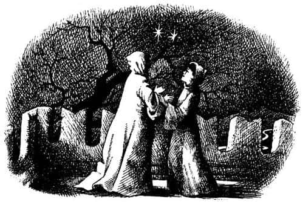

Cüce Prens Caspian’ı Anlatıyor
Prens Caspian, Narnia’nın ortasındaki büyük bir kalede, amcası Narnia Kralı Miraz ve kızıl saçlı Kraliçe Prunaprismiya ile birlikte yaşardı. Annesi ve babası ölmüştü. Caspian’ın en sevdiği kişi dadısıydı. Bir prens olduğu için, konuşmak dışında hemen her şeyi yapabilen harika oyuncakları vardı; ancak o en çok oyuncaklarının toplanıp dolaba kaldırıldığı ve dadısının gelip hikâye anlatmaya başladığı akşam saatlerini severdi.
Amcasından ve yengesinden pek hoşlanmazdı. Ancak amcası haftada iki kez, kalenin güney tarafındaki terasta yarım saat boyunca birlikte yürüyüş yapmak için onu yanına çağırtırdı. Yine böyle bir gün Kral ona, “Oğlum” dedi, “artık sana ata binmesini ve kılıç kullanmasını öğretmemiz gerekiyor. Biliyorsun yengenle benim çocuğumuz yok, ben öldüğüm zaman başa sen geçeceksin. Bu hoşuna gider mi?”
“Bilmiyorum amca” dedi Caspian.
“Bilmiyorsun ha?” dedi Miraz. “Bir insan bundan daha fazlasını ister mi merak ediyorum açıkçası!”
“Benim için fark etmez, benim düşlerim var” dedi Caspian.
“Nedir onlar?” diye sordu Kral.
“Ben – ben – ben eski zamanlarda yaşayabilmeyi isterdim” dedi Caspian (o zamanlar henüz küçük bir çocuktu).
O ana kadar Kral Miraz, bazı yetişkinlerin yaptığı gibi, çocukların sözleriyle ilgilenmediğini açıkça gösteren yorgun bir ifadeyle konuşuyordu, ancak şimdi birden gözlerini Caspian’a çevirdi.
“Ha? Ne dedin? Hangi eski zamanlardan bahsediyorsun?”
“Ah, bilmiyor musun amca?” dedi Caspian. “Her şeyin tamamen farklı olduğu zamanlar. Bütün hayvanların konuştuğu, derelerde ve ağaçlarda iyi insanların yaşadığı zamanlar. Su ve orman perileri denirdi onlara. Cüceler de vardı – ayrıca tüm ormanlarda sevimli küçük Faunlar yaşardı, ayakları keçi ayağı gibiydi ve—”
“Bunlar bebeklere anlatılan saçmalıklar” dedi Kral öfkeyle. “Sadece bebeklere! Duydun mu? Bu tür şeylere inanmayacak kadar büyüdün. Bu yaşta savaş ve macera düşünüyor olmalısın, peri masalları değil.”
“Ama o zamanlarda savaş ve macera da vardı” dedi Caspian. “Harika maceralar. Bir zamanlar Beyaz Cadı vardı ve kendini bütün ülkenin kraliçesi ilan etmişti. Ve öyle bir büyü yapmıştı ki mevsim hep kıştı. Sonra bir yerlerden iki erkek ve iki kız çocuğu geldi. Cadı’yı öldürdüler ve Narnia’ya kral ve kraliçe oldular – isimleri Peter, Susan, Edmund ve Lucy’ydi. Onların yönetiminde herkes yıllar boyu mutlulukla yaşadı. Tüm bunlar Aslan sayesinde oldu—”
“O kim?” dedi Miraz. Eğer Caspian biraz daha büyük olsaydı amcasının sesinin tonundan, çenesini kapatmasının akıllıca olacağını anlardı. Ancak o boşboğazlığa devam etti.
“Bilmiyor musun?” dedi. “Aslan, denizlerin ötesinden gelen en büyük yırtıcıdır.”
“Bütün bu saçmalıkları kim anlatıyor?” dedi Kral gök gürlemesini andıran bir sesle. Caspian korkmuştu, tek kelime daha etmedi.
“Ekselansları” dedi Kral Miraz, Caspian’ın o ana kadar tuttuğu elini bırakarak, “bir cevap verilmesinde ısrar ediyorum. Yüzüme bak. Bu yalanlar yumağını sana kim anlattı?”
“Da – dadı” dedi Caspian ve gözyaşlarına boğuldu.
“Kes ağlamayı” dedi amcası, onu omuzlarından tutup sarsarak. “Kes. Seni bir daha bu gülünç hikâyeler hakkında konuşurken – ya da onları düşünürken – yakalamayayım. O krallar ve kraliçeler asla yaşamadı. Aynı anda nasıl iki kral olur ki? Aslan diye bir kişi de yok. Ayrıca Aslan denilen şeyler de yok. Hayvanların konuştuğu bir zaman hiç olmadı. Duyuyor musun?”
“Evet, amca” diye cevapladı Caspian, ağlayarak.
“Öyleyse bir daha hiç söz etmeyelim bundan” dedi Kral. Sonra terasın uzak köşesinde dikilmekte olan asilzadelerden birini çağırdı ve soğuk bir sesle, “Ekselanslarına odasına kadar refakat edin ve dadıyı hemen bana gönderin” dedi.
Caspian ertesi gün nasıl bir kötülük yaptığının farkına vardı, çünkü dadısıyla vedalaşmasına bile izin verilmemiş, dadısının yerine ona bir öğretmen tutulacağı söylenmişti.
Caspian dadısını çok özlüyor, sürekli ağlıyordu. Çok mutsuzdu. Bu nedenle Narnia hakkındaki eski hikâyeleri öncekinden daha fazla düşünüyordu. Her gece rüyasında cüceleri, orman perilerini görüyor, kaledeki kedileri ve köpekleri kendisiyle konuşmaları için ikna etmeye çalışıyordu. Ancak köpekler kuyruklarını sallamaktan, kediler de mırıldanmaktan başka bir şey yapmıyordu.
Caspian yeni öğretmenden nefret edeceğini düşünüyordu. Ancak dadısından ayrı geçirdiği ilk haftanın sonuna doğru öğretmen geldiğinde, onun sevilmeyecek türde bir insan olmadığını anladı. Caspian’ın ömründe gördüğü en küçük ve en şişman adamdı o. Beline kadar uzanan, ince, kır sakalları vardı. Kırışıklarla kaplı çirkin, esmer yüzüne bilge ve nazik bir görünüm hâkimdi. Sesinde ciddiyet, bakışlarında mutlu bir ifade vardı. Ne zaman şaka yaptığını, ne zaman ciddi olduğunu anlamak için onu çok yakından tanımak gerekiyordu. İsmi Doktor Cornelius’tu.
Caspian’ın, Doktor Cornelius’tan aldığı dersler arasında en çok sevdiği, tarih dersiydi. O zamana kadar, dadının hikâyeleri dışında Narnia tarihi hakkında hiçbir şey öğrenmemişti. Kraliyet ailesinin ülkeye sonradan geldiğini öğrendiğinde çok şaşırmıştı.
“Narnia’yı fetheden ve ülkeyi kendi krallığı haline getiren” diye başladı Doktor Cornelius, “siz Ekselanslarının atası, Birinci Caspian’dı. Ulusunuzu bu ülkeye yerleştiren odur. Aslında sizler Narnia’nın yerlisi değilsiniz. Hepiniz Telmarlısınız; yani hepiniz Batı Dağları’nın ötesindeki Telmar ülkesinden geldiniz. Birinci Caspian’a Fatih Caspian denilmesinin nedeni budur.”
“Doktor söyleyin lütfen” diye ısrar etti Caspian bir gün, “bizler Telmar’dan buraya gelmeden önce Narnia’da kimler yaşıyordu?”
“Telmarlılar gelmeden önce burada kimse yaşamıyordu ya da çok az insan vardı” dedi Doktor Cornelius.
“O zaman benim üçüncü kuşaktan atalarım kime fethetti?”
“Kime değil kimi, Ekselansları” dedi Doktor Cornelius. “Galiba tarihten çok dilbilgisi derslerine ağırlık vermenin zamanı geldi.”
“Lütfen, henüz değil” dedi Caspian. “Demek istediğim, bir savaş olmadı mı? Eğer kimseyle savaşmadıysa niçin Fatih Caspian deniliyor ona?”
“Narnia’da çok az insan olduğunu söyledim” dedi Doktor, iri gözlüklerinin ardından küçük çocuğa çok tuhaf bir ifadeyle bakarak.
Anlık bir şaşkınlıktan sonra Caspian’ın yüreği hopladı. “Başka şeylerin—” diye söze girdi soluğu kesilerek, “başka şeylerin olduğunu mu söylemek istiyorsun? Hikâyelerdeki gibi mi?.. Başka neler—”
“Sus!” dedi Doktor Cornelius, yüzünü Caspian’ınkine yaklaştırarak. “Bir kelime daha etme. Dadının sana Eski Narnia’yı anlattığı için uzaklaştırıldığını bilmiyor musun? Kral bundan hoşlanmıyor. Bu sırları sana açıkladığımı öğrenirse seni kırbaçlatır, benim de kellemi uçurur.”
“Ama neden?” diye sordu Caspian.
“Dilbilgisine başlamanın tam zamanı” dedi Doktor Cornelius yüksek sesle. “Ekselansları lütfen Dilbilgisi Bahçesi ya da Prensipler Çardağının Hoş ve Şefkatli Duygulara Açılışı’nın dördüncü sayfasındaki Pulverulentus Siccus’u açsınlar.”
Bundan sonra öğleye kadar hep isimler ve fiillerle uğraştılar, fakat Caspian’ın herhangi bir şey öğrendiğini sanmıyorum. Çok heyecanlıydı. Doktor Cornelius er ya da geç daha fazlasını anlatacaktı. Yoksa neden bu kadar çok şey söylemişti ki?
Bu onda hayal kırıklığı yaratmamıştı. Birkaç gün sonra öğretmeni, “Akşam sana astronomi dersi vereceğim” dedi. “Bu gece yarısı iki soylu gezegen Tarva ve Alambil birbirlerinin bir derece yakınından geçecekler. İki yüz yılda bir olan bir karşılaşma bu. Ekselansları, bunu tekrar görecek kadar uzun yaşamayacak. Her zamankinden daha erken yatmanız yerinde olur. Karşılaşma anı yaklaştığında gelip sizi uyandıracağım.”
Bu olay Caspian’ın üzerinde konuşulmasını istediği konuyla ilgiliymiş gibi görünmüyordu. Her neyse, gece yarısı kalkmak her zaman ilginçtir ve bu Caspian’ın az çok hoşuna gidiyordu. Yatağa girdiğinde, önce uyuyamayacağını düşünmüştü, ama kısa süre sonra uyuyakaldı. Birinin nazikçe kendisini sarstığını hissettiğinde sanki yalnızca birkaç dakika geçmişti.
Yatağında oturdu ve odanın ayışığında apaydınlık olduğunu gördü. Kukuletalı bir kıyafete bürünmüş, elinde küçük bir kandil taşıyan Doktor Cornelius yatağın yanı başındaydı. Caspian ne yapacaklarını hatırladı. Kalktı, elbiselerini giydi. Mevsimlerden yazdı, ama havanın beklediğinden daha serin olduğunu hissetmişti. Doktor onu kendisininkine benzer bir elbiseyle sarmalayıp ayakları için bir çift yumuşak potin verdiğinde, çok hoşnut oldu. Çok geçmeden öğretmen ve öğrenci odayı terk ettiler. İkisi de öyle sarmalanıp öyle yumuşak ayakkabılar giymişlerdi ki, karanlık koridorlarda zorlukla seçiliyor, neredeyse hiç ses çıkarmıyorlardı.

Caspian, doktoru izledi; birçok koridor geçip, birçok merdiven tırmandılar. Sonunda kulelerin birindeki küçük bir kapıyı açıp çatıya çıktılar. Bir yanda mazgallı siperler, diğer yanda dik bir çatı vardı; aşağıda pırıltılı ama karanlık bahçeler görünüyordu. Tepelerinde yıldızlar ve ay vardı.
Biraz sonra kalenin büyük, ana kulesine açılan bir başka kapıya ulaştılar. Doktor Cornelius kapının kilidini açtı; kulenin karanlık sarmal merdivenlerini tırmanmaya başladılar. Caspian heyecanlıydı, çünkü daha önce bu merdivenlere tırmanmasına asla izin verilmemişti.
Uzun ve dik bir tırmanıştı, ancak Caspian kulenin damına çıkıp soluklandığında, buna değdiğini düşündü. Sağında, uzakta Batı Dağları’nı belli belirsiz fark edebiliyordu. Solunda Büyük Nehir’in parıltısı görülüyordu. Etraf öylesine sessizdi ki bir mil ötedeki Kunduzbarajı Çağlayanı’nın sesini duyabiliyordu. İzlemek için geldikleri yıldızları bulmakta hiç zorluk çekmediler. Güneyde, oldukça alçakta, iki küçük ay gibi parlıyorlardı. Birbirlerine çok yakındılar.
“Çarpışacaklar mı?” diye sordu hayranlık barındıran bir sesle.
“Hayır, sevgili Prens” dedi doktor (o da fısıldayarak konuşuyordu). “Gökyüzünün yükseklerindeki büyük efendiler ne zaman hangi adımı atacaklarını çok iyi bilirler. Onlara iyice bak. Şanslıyız. Bu karşılaşma zavallı Narnia toprakları için büyük bir lütuf anlamına geliyor. Zafer Tanrısı Tarva, Barış Tanrıçası Alambil’e selam veriyor. En yakın oldukları an geliyor.”
“Ne yazık ki şu ağaç tam da aramızda” dedi Caspian. “Bunun kadar yüksek değil, ama batı kulesinden daha iyi görürdük.”
Doktor Cornelius iki dakika kadar hiçbir şey söylemedi, gözlerini Tarva ve Alambil’den ayırmadan orada öylece durdu. Sonra derin bir nefes aldı ve Caspian’a döndü.
“İşte” dedi. “Çok az insanın gördüğü ve bir daha da göremeyeceği bir şeye tanıklık ediyorsun. Ayrıca haklısın. Küçük kuleden daha iyi görebilirdik. Seni buraya bir başka nedenle getirdim.”
Caspian doktora baktı, ama kukuletası yüzünün büyük bir bölümünü gizliyordu.
“Bu kulenin özelliği” dedi Doktor Cornelius, “altımızda altı tane boş oda ve uzun bir merdiven olması. Merdivenlerin dibindeki kapı kilitli. Kimse bizi duyamaz.”
“Önceki gün bana anlatmadığın şeylerden mi bahsedeceksin?” dedi Caspian.
“Evet” dedi Doktor. “Ama şunu sakın aklından çıkarma, sen ve ben, burası, yani büyük kulenin üstü dışında hiçbir yerde kesinlikle bunlardan bahsetmemeliyiz.”
“Peki. Söz veriyorum” dedi Caspian. “Haydi, lütfen devam et.”
“Dinle” dedi Doktor. “Eski Narnia hakkında duyduklarının hepsi doğru. Burası insanların ülkesi değil. Aslan’ın, uyanan ağaçların, göze görünen su perilerinin, Faunların, satirlerin, cücelerin, devlerin, tanrıların, sentorların ve konuşan hayvanların ülkesi. Birinci Caspian bunlara karşı savaşmıştı. Pınarları, ağaçları ve hayvanları susturanlar, Faunları ve cüceleri öldürüp sürgüne gönderenler siz Telmarlılarsınız ve şimdi de onlara ait ne varsa unutturmak istiyorsunuz. Kral onlardan söz edilmesine asla izin vermiyor.”
“Ah, bunların hiç olmamasını isterdim” dedi Caspian. “Artık iş işten geçmiş olsa bile, hepsinin doğru olduğuna sevindim.”
“Senin ırkından olanların çoğu gizlice bunu arzular” dedi Doktor Cornelius.
“Şey, Doktor” dedi Caspian, “neden senin ırkın diyorsun? Üstelik sen de bir Telmarlısın.”
“Öyle miyim?” dedi doktor.
“Eh, ne de olsa bir insansın” dedi Caspian.
“Öyle miyim?” diye tekrarladı Doktor, sesi daha derinden geliyordu ve aynı anda kukuletasını geriye itmişti.
Caspian ayışığında onun yüzünü açıkça görebiliyordu.
Caspian o an gerçeği anladı ve bunu çok uzun zaman önce fark etmiş olması gerektiğini düşündü. Doktor Cornelius o kadar küçük, o kadar şişmandı ve öylesine uzun bir sakalı vardı ki, aynı anda aklına iki şey birden geldi. Birincisi dehşet verici bir düşünceydi: “Gerçek bir insan değil, asla insan değil, o bir cüce ve beni buraya öldürmek için getirdi.” Diğeri olağanüstü hoş bir düşünceydi: “Hâlâ gerçek cüceler var ve ben en sonunda biriyle karşılaştım.”
“Sonunda buldun” dedi Doktor Cornelius. “Çok yaklaştın desek daha doğru olur aslında. Ben safkan bir cüce değilim. Bende insan kanı da var. Büyük savaşlarda birçok cüce kaçtı, sakallarını kesip yüksek topuklu ayakkabılar giyerek ve insan gibi davranarak yaşamaya devam ettiler. Sizin Telmarlılara karıştılar. Ben onlardan biriyim, yani bir yarıcüce. Eğer dünyanın herhangi bir yerinde benim soyumdan olanlar, yani gerçek cüceler varsa, kuşkusuz küçümserler beni, hain olduğumu söylerler. Ancak bütün bu yıllar boyunca halkımızı, Narnia’nın diğer mutlu yaratıklarını ve geçmişte kalmış özgür günleri unutmadık.”
“Ben – ben çok üzgünüm Doktor” dedi Caspian. “Benim hatam değildi, biliyorsun.”
“Bunları seni suçlamak için söylemiyorum sevgili Prens” dedi doktor. “Bunları neden söylediğimi sorabilirsin. İki nedenim var: Birincisi, yaşlı kalbim bu gizli anıları öyle uzun süre sakladı ki artık sızlıyor; eğer bunları sana fısıldamazsam patlayacak. İkinci neden de şu: Kral olduğunda bize yardım edebilirsin, çünkü Telmarlı olmana rağmen Eski Şeyleri de sevdiğini biliyorum.”
“Evet, doğru” dedi Caspian. “Fakat nasıl yardım edebilirim?”
“Cüce halkının, benim gibi son temsilcilerine karşı nazik olabilirsin. Bilgili büyücüleri toplayıp ağaçları bir kez daha uyandırmanın bir yolunu bulmayı deneyebilirsin. Saklanarak yaşayan cüceler, konuşan hayvanlar ve Faunlar olup olmadığını görmek için ülkenin bütün vahşi yerlerini, tüm kuytularını araştırabilirsin.”
“Kalan olmuş mudur acaba?” diye sordu Caspian, büyük bir şevkle.
“Bilmiyorum – bilmiyorum” dedi doktor derin bir iç çekişle. “Bazen kalmamış olmasından korkuyorum. Bütün yaşamım boyunca onların izlerini aradım. Bazen dağlarda cüce davullarını duyduğumu düşündüm, bazen de geceleyin ormanda dans eden Faunları gördüğümü; fakat oraya gittiğim zaman asla bir şey bulamadım. Sık sık ümitsizliğe kapıldım, ama beni yeniden umutlandıran bir şeyler hep olur. Bilmiyorum. Fakat sen, en azından eski Yüce Kral Peter gibi bir kral olmayı, amcan gibi olmamayı deneyebilirsin.”
“Öyleyse krallar ve kraliçeler hakkında anlatılanlar doğru – Beyaz Cadı hakkındakiler de” dedi Caspian.
“Tabii doğru” dedi Cornelius. “Onların zamanında Narnia Altın Çağı’nı yaşadı. Ülke onları asla unutmadı.”
“Onlar bu kalede mi yaşamışlardı, Doktor?”
“Hayır, sevgili oğlum” dedi yaşlı adam. “Bu kale daha dün inşa edildi. Büyük dedenin dedesi inşa etti onu. Aslan’ın Narnia’ya kral ve kraliçe yaptığı iki âdemoğluyla iki havvakızı, Cair Paravel Kalesi’nde yaşamışlardı. Yaşayan hiç kimse bu kutsal yeri görmemiştir ve – ve belki şimdi harabeleri bile yok olmuştur. Ancak buradan uzakta, Büyük Nehir’in ağzında, denizin hemen kıyısında olduğuna inanıyoruz.”
“Uf!” dedi Caspian ürpererek. “Kara Ormanlar’ı mı kastediyorsun? Hani bütün ha – bütün hayaletlerin yaşadığı yer?”
“Ekselansları, size öğretildiği gibi konuşuyorsunuz” dedi Doktor. “Ancak hepsi yalan. Orada hayaletler yok. Bu Telmarlıların uydurduğu bir hikâye. Krallarınız oldum olası denizden korktu. Çünkü Aslan’ın denizin ötesinden geldiğini akıllarından çıkaramıyorlar. Kendileri oraya yaklaşmak istemediği gibi, başkalarının da yaklaşmasını istemiyorlar. O nedenle halkı sahilden koparmak amacıyla büyük ormanların oluşmasına izin verdiler. Ancak ağaçlarla kavga ettikleri için ormandan da korkuyorlar ve oranın hayaletlerle dolu olduğunu sanıyorlar. Krallar ve büyük adamlar bu hikâyelere kısmen inanıyor, kısmen de bunları körüklüyorlar, çünkü denizden ve ağaçlardan korkuyorlar. Hiçbir Narnialının sahile inip denize – Aslan’ın ülkesine ve gündoğumuna – ve dünyanın doğu ucuna bakmaya cesaret edememesi, onların kendilerini güvende hissetmesine neden oluyor.”
Birkaç dakika aralarında derin bir sessizlik oldu. Sonra Doktor Cornelius, “Gel. Uzun süreden beri buradayız. Aşağıya inip yatmanın zamanıdır” dedi.
“Gitmek zorunda mıyız?” dedi Caspian. “Bütün bunlar üstüne saatler ve saatlerce konuşalım istiyorum.”
“Bunu yaparsak, biri bizi aramaya başlayabilir” dedi Doktor Cornelius.